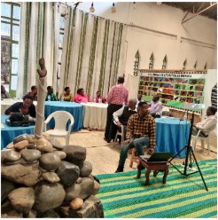

Annual Strategic Mini-Retreat
Theme: Reflection, Resilience, and Re-evaluating Our Path Forward
Executive Summar
On September 26, 2023, the Executive Committee of Stroke Action Rwanda (SAR) convened a mini-retreat to conduct a comprehensive organizational review. This assembly served as a critical touchpoint for 15 people—including stroke survivors, dedicated caregivers, and organizational leadership—to assess the progress made since SAR’s inception in 2019 and to align on future strategic priorities.
The Venue: Kimezamiryango Center
Selected for its tranquil atmosphere and conducive environment for mental well-being, the Kimezamiryango Center in Bishenyi provided a restorative backdrop for our proceedings. Located just outside Kigali, the center’s stone sculpture exhibitions and expansive botanical gardens offered the necessary quietude for deep reflection and meaningful group dialogue.
Core Objectives & Methodology
The retreat was facilitated through a blend of structured presentations and participatory workshops, focusing on three key pillars:
| Pillar | Focus Area |
|---|---|
| Identity & Heritage | Re-affirming our collective identity as stroke survivors and advocates within the Rwandan context. |
| Performance Review | Evaluating organizational milestones and impact metrics achieved since our 2019 founding. |
| Strategic Needs Assessment | Identifying current gaps in care, localized "home-grown" solutions, and immediate advocacy priorities. |
Key Highlights & Peer Support
The retreat transcended administrative planning by fostering a robust peer-support ecosystem. Key activities included:
• Narrative Therapy: Participants engaged in storytelling and shared testimonies, a vital component in the psychological rehabilitation of stroke survivors.
• Holistic Wellness: A guided walking tour through the center’s gardens emphasized the importance of physical mobility and the therapeutic benefits of nature.
• Stakeholder Consultation: Open-floor discussions ensured that both young and elderly members, as well as caregivers, had a voice in shaping SAR’s operational roadmap.
Outcomes and Future Outlook
The session concluded with a comprehensive evaluation, where participants recognized the profound impact of peer-to-peer engagement. The primary recommendation moving forward is the transition from single-day sessions to extended three-day residential retreats. This expansion will allow for more intensive capacity building and the deepening of support networks.
"Through the sharing of ideas and local solutions, we have strengthened the foundation of Stroke Action Rwanda, ensuring our community remains resilient and well-supported.